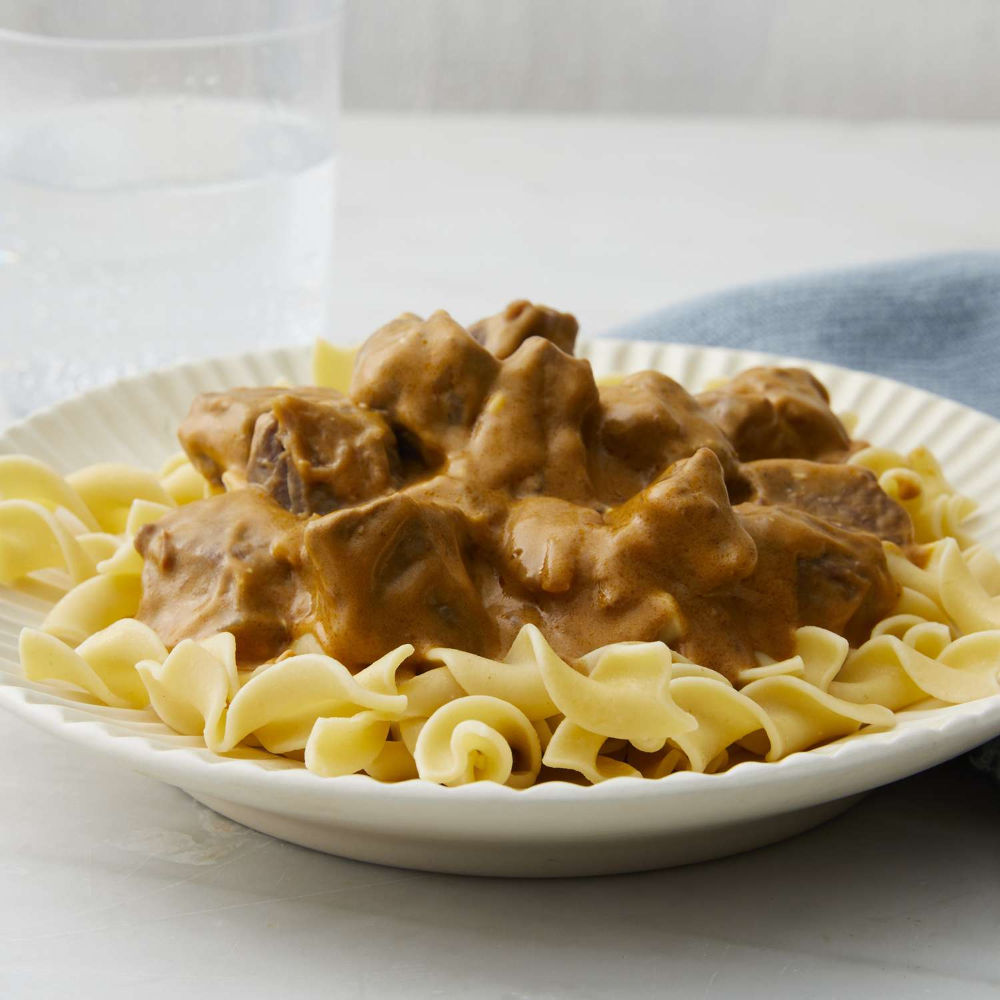

Beef Stroganoff

Description
This is one of my personal favorites: my mom's beef stroganoff. If you have a picky eaters in your family, you can be sure that even they will love this recipe. You can supplement with noodles, rice, or anything else you choose.
Ingredients
- 2 packs of stew beef
- 1/2 can beef broth
- 1 can cream of mushroom soup
- 1 small sweet onion-chopped
- 1 container of mushrooms
- 1 tablespoon olive oil
- 1 package noodles of choice
Steps
- Sautee onions with olive oil until soft.
- Put the onions and stew beef in into a deep stew pot on medium heat. After a few minutes, stir. Wait until the beef is fully browned.
- Add the beef broth, cream of mushroom soup, and the mushrooms. Bring pot to a simmer.
- Simmer for 2 hours, occanionally stir.
- Cook noodles, add to pot.